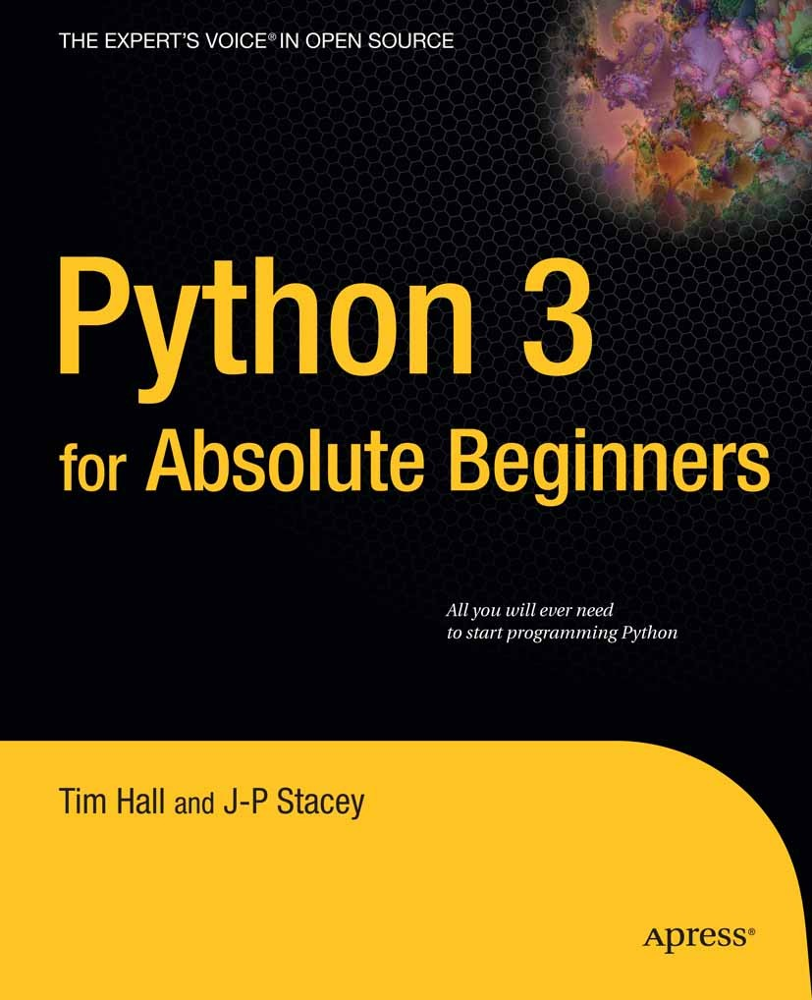

Is an easy to learn, powerful programming language.
It has efficient high-level data structures and a simple but effective approach to object-oriented programming. Python’s elegant syntax and dynamic typing, together with its interpreted nature, make it an ideal language for scripting and rapid application development in many areas on most platforms.

The Python interpreter is easily extended with new functions and data types implemented in C or C++ (or other languages callable from C).
Python is also suitable as an extension language for customizable applications.
This tutorial introduces the reader informally to the basic concepts and features of the Python language and system.
It helps to have a Python interpreter handy for hands-on experience, but all examples are self-contained, so the tutorial can be read off-line as well.
Q.What are the common built in data types in Python?
The data tpyes already available in python are called built in data types There are five built in sata types in python.
None Types ----------- does noy contain any values
Numeric Types ----------- int.float.complex.bool.data data types
Sequences ---------- str.bytes.byte.array.lis.tuple.range
Sets ---------- set.frozen set
Mapping
Q.What is pass in Python?
The pass statement does not anything.it is used with if statement or inside a loop to represents no operation. The pass statement is a null operation; nothing happens when it executes. The is also useful in places where your code will eventuallygo, but hat not been written yet.Q.> Write the rules for choosing neme of variables.
-<.PREVIOUS-----------NEXT>